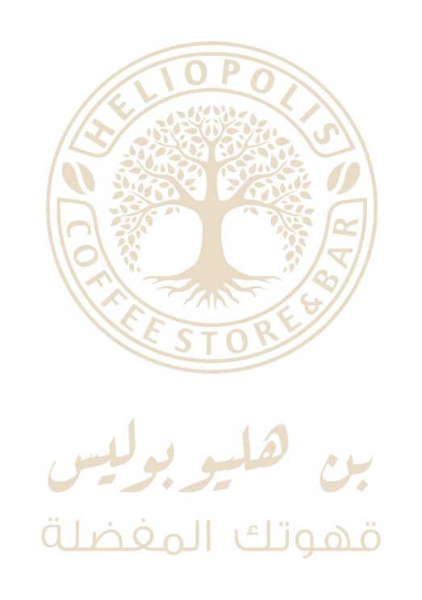
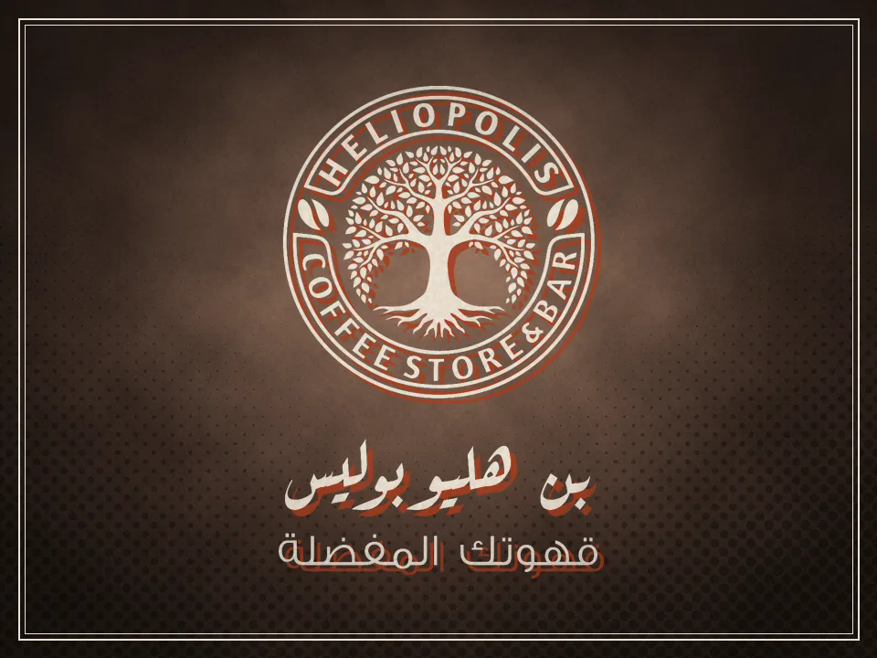
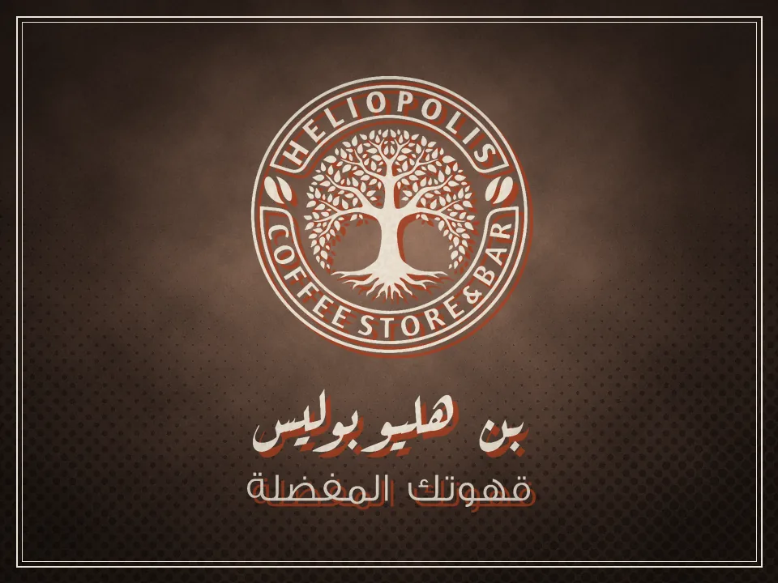
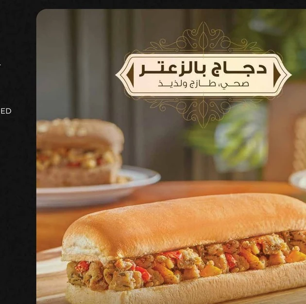
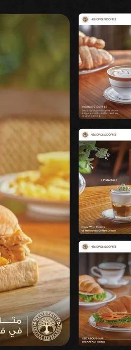

Brand identity
HeliopolisCoffee Store & Bar
A heritage coffee store with a stamp for a mark: a rooted tree sealed in a double ring, two scripts sharing one voice, and a palette poured from espresso and cream.

01 · The emblem
Rooted in the neighborhood
The mark is a seal: a tree in full leaf over visible roots, ringed twice by the store's name with two coffee beans at the axis. Every lockup the brand uses comes from this one emblem.


A tree with its roots showing. The seal reads as heritage you can taste: a tree that has been there long enough to grow roots, stamped like a coffee sack. The two beans at the ring's axis turn the seal toward coffee, and the double ring gives it the weight of an old storefront sign. This is our interpretation of the design intent, not a quote from the brand.
02 · Color
Espresso and cream
Five working colors, sampled from the brand's own artwork: two roast browns, two creams, and the copper that edges the embossed finish.
03 · Letterforms
Two scripts, one voice
The identity speaks in two letterforms: a condensed Latin caps style that runs around the emblem's ring, and the Arabic name drawn as custom calligraphy under it. No editable type specimens exist in the documented material, so the letterforms are shown here inside the brand's own artwork rather than redrawn.
Latin · ring caps
Condensed caps with wide tracking carry the store name around the seal, in the manner of a stamped coffee mark. This is our reading of the style, not a font identification.
Arabic · calligraphy
The Arabic name is drawn as flowing calligraphy, with the tagline beneath it in a lighter hand. It is artwork, not a typeface, and is used as drawn.
04 · In use
On the table
The identity at work in the brand's own social presence: the breakfast launch artwork and the store's social post series, built on the same seal, scripts and palette.


Scope notes
- Documented on this page: the emblem and its lockups, the working palette, the letterforms inside the brand's artwork, and the identity as applied in launch and social artwork.
- Colors are sampled pixel values from the brand's own artwork files; names like Espresso and Copper are descriptive, not official brand names.
- Packaging, cups and print stationery are not shown: they sit outside the material documented for this study, so they are left out rather than approximated.
- The Latin letterform and Arabic calligraphy are presented in the artwork itself; no typeface is named or substituted.